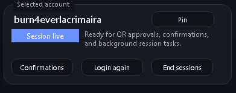
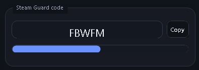
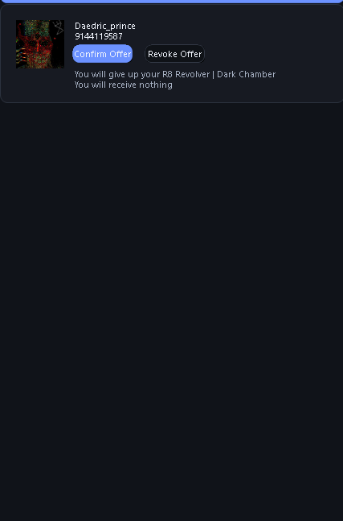
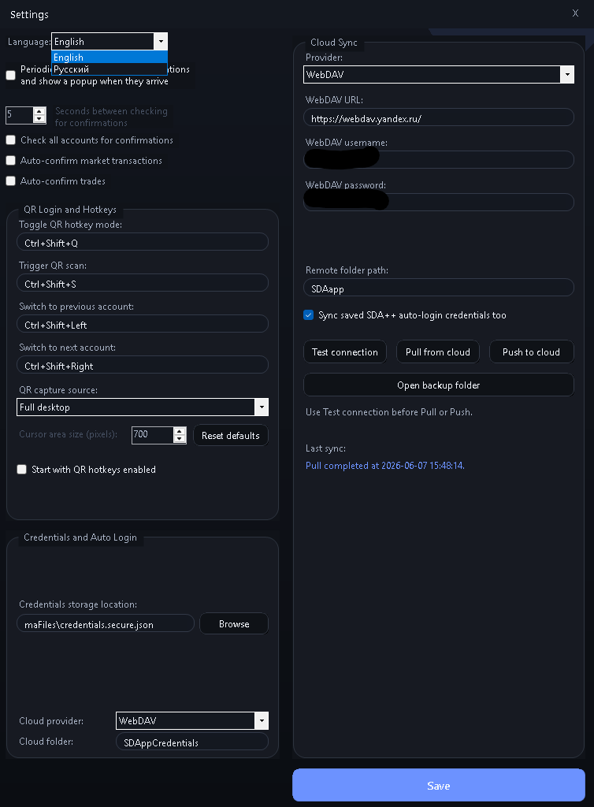
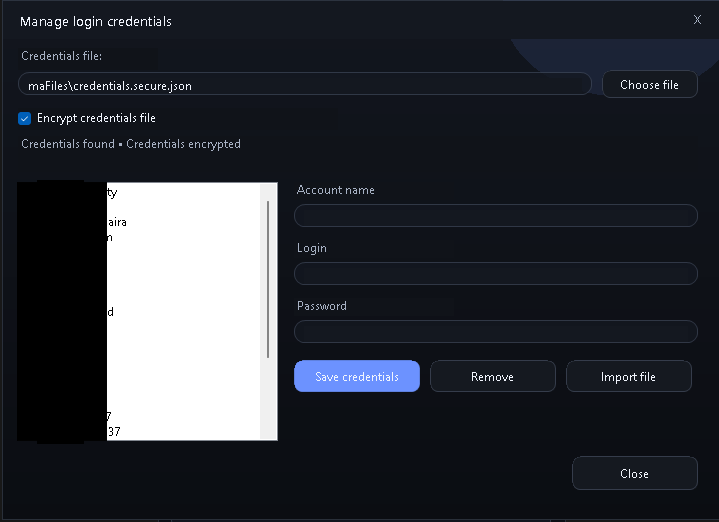

Steam Guard 2FA codes
View rotating Steam Guard authentication codes and manage multiple accounts from the desktop.
A modern Windows fork of Steam Desktop Authenticator for Steam Guard codes, trade confirmations, QR login, cloud synchronization, and session recovery.

View rotating Steam Guard authentication codes and manage multiple accounts from the desktop.
Approve or revoke Steam trade and market confirmations directly from the Windows client.
Use QR-code login from desktop screenshots and switch accounts quickly with keyboard shortcuts.
Recover sessions and re-login accounts with saved encrypted credentials when needed.
Synchronize encrypted .maFile data and saved credentials using WebDAV cloud storage.
Download the portable release, extract it, and run SDA++.exe without an installer.




SDA++ is an unofficial Steam Guard desktop application and is not affiliated with Valve or Steam. Keep encrypted backups of your Steam Guard files and only download releases from the official GitHub repository.